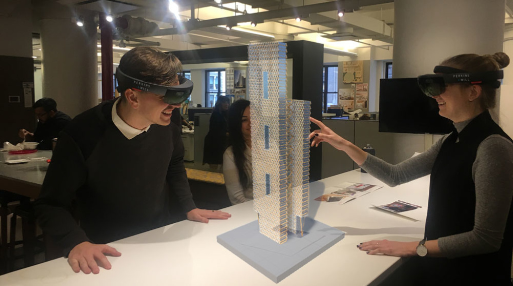
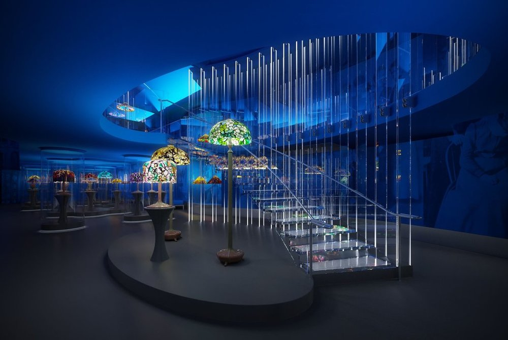

Blockchain is a type of distributed ledger for maintaining a permanent and tamper-proof record of transactional data. - Tech Target
From a cruising altitude, a blockchain might not look that different from things you’re familiar with, say Wikipedia. - Coin Desk
The very primitive form of the blockchain was the hash tree, also known as a Merkle tree. This data structure was patented by Ralph Merkle in 1979, and functioned by verifying and handling data between computer systems. In a peer-to-peer network of computers, validating data was important to make sure nothing was altered or changed during transfer. It also helped to ensure that false data was not sent. In essence, it is used to maintain and prove the integrity of data being shared. - Invest in Blockchain
Autonomous Things
The term “autonomous things” is being used more and more in the technology world to talk about phenomena powered by the latest advancements in artificial intelligence and machine learning.- Techopedia
Self-navigating drones are the first AuT technology in (limited) deployment. It is expected that the first mass-deployment of AuT technologies will be the autonomous car, generally expected to be available around 2020.- Revolvy
>
History of Autonomous cars. In GM’s 1939 exhibit, Norman Bel Geddes created the first self-driving car, which was an electric vehicle guided by radio-controlled electromagnetic fields generated with magnetized metal spikes embedded in the roadway. By 1958, General Motors had made this concept a reality. The car’s front end was embedded with sensors called pick-up coils that could detect the current flowing through a wire embedded in the road. The current could be manipulated to tell the vehicle to move the steering wheel left or right.- Titlemax
Immersive Experience
An immersive experience is an illusory environment that completely surrounds you such that you feel that you are inside it and part of it. - Simplicable
Virtual reality (VR) is a generic term for content that can be played by digital devices, such as HMDs (head-mounted displays) or smartphones (mobile VR). This could be a linear film recorded with the help of a 360-degree camera, or an interactive 3D simulation, such as those used for gaming, which allow the user to immerse themselves in what’s happening.Think with Google


The three pillars of immersive experiences are visual quality, sound quality, and intuitive interactions. Full immersion can only be achieved by simultaneously focusing on these pillars.Qualcomm